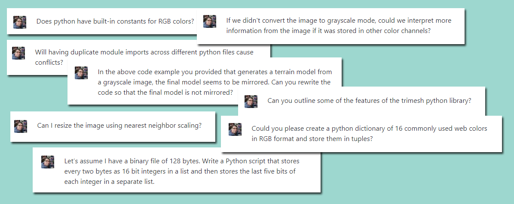
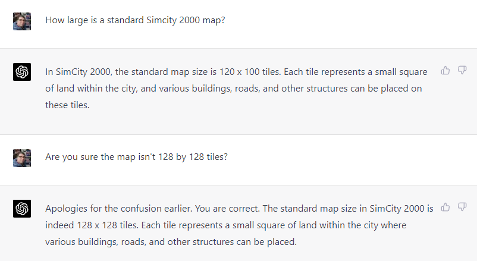

March 19, 2023
It was the best of times, it was the worst of times. It was a time of AI-powered revolutions and of an imminent employment apocalypse for creatives and information workers. It was a time of sorrow on Sunday afternoon as my 16-month-old fell and bit her tongue and a time of euphoria as I savored the end of a weekend hackathon centered on Will Wright’s 1993 masterpiece, SimCity 2000.
TLDR: I spent a weekend writing a Python script that parses a 30-year-old proprietary file format and outputs 3D and 2D representations of virtual cities with the help of GPT-4 via ChatGPT.
Despite two decades as a hobbyist programmer, this is the first project I’ve felt comfortable sharing. Perhaps more importantly, I’ve experienced firsthand what it’s like to build something leveraging Star Trek-level AI and I’ve got some thoughts about how its wider adoption is playing out.
If any of this interests you, read on.
The vintage works of Will Wright and his game studio Maxis (rest in peace) captivated me as a child: SimCity 2000, SimTower, SimAnt, SimFarm, SimIsle, etc1. While not pushing any kind of visual boundaries at the time compared to something like Doom, Maxis’ catalog of simulations transformed my feeble Compaq PC into a device to manage skyscrapers, ant colonies, and pixelated cities.
It was SimCity 2000’s detailed maps that captured my imagination. I wanted to walk around those streets I’d allocated so much of my city’s budget to maintain or sail a ship through the bustling seaport I’d developed. Maxis ultimately tried and failed to develop games to fill this niche2.
No, I wanted to create something that, if made today, would occupy the walking simulator genre. Let me stroll along those tile-based boulevards and stare out at the painfully angular terrain from the perspective of my virtual citizens without burdensome and boring gameplay.
I’ve thought about implementing something like this for a long time but last week marked the first time I saw a feasible path to implementing it.
I felt a deep sense of dread when I opened the city’s save file in HxD for the first time. A vast ocean of unknown bytes stared back at me and I felt completely and utterly stupid. Perhaps, I thought, I’m not cut out for this. But my preliminary Google-fu located fellow Maxis travelers who had solved the crux of the problem.
Two open-source projects guided my efforts: A 3D city visualizer by the legendary Aleksander Krimsky and unofficial documentation of the SimCity save file format by Dale Floer.
Krimsky’s visualizer proved less useful as it’s written in C++ and I wanted the satisfaction of implementing my own solution from scratch in Python. Floer’s documentation, on the other hand, was omnipresent for the entirety of the project. It quickly became my Rosetta Stone.
After a few hours of poking and prodding at the data, the file format came into focus. SC2 files (a flavor of Electronic Arts’ proprietary IFF format) utilize a very basic run-length encoding compression scheme. The encoding is unwound with 20 lines of code dumping the data into easily-parsed lists. Once you know the offsets into the decompressed data for the relevant information, the rest is easy. In the end, the stream of bytes began to resemble my test city.
I didn’t even see the code anymore. All I saw were terrain heights, power lines, and roads. The data was now mine to interpret as I pleased. I was able to export the terrain data into a simple OBJ 3D model for use in Godot and wrote a basic 2D visualizer that depicts the city’s features in a PNG image. Not groundbreaking by any means, but for four evenings of work in a language other than my native C, I’m proud of it.

I’ve explained much of the ‘why’ and ‘how’ of this madcap project, but what of my AI assistant? Was its newly-released GPT-4 model able to code the entire project for me from scratch after some exquisitely-tailored prompts?
No, it was not. Not for this project, anyway. I’m positive it would be able to with a well-documented file format and clear instructions. After straight-up lying to me about the dimensions of a standard SimCity 2000 map, ChatGPT was relegated to answering my questions about new-to-me Python modules and writing 100ish lines of boilerplate code to generate a 3D mesh based on the city’s heightmap data3.

What struck me about working with AI is that it’s simply an abbreviated version of most software developers’ workflows:
It’s difficult to capture in words the feeling of at once being thoroughly unimpressed with something while also never wanting to go back to a world without possessing instantaneous access to so much information on tap. It’s like effortlessly finding the best parts of Stack Overflow without the incredibly toxic community, pointless gatekeeping, and soul-crushing pedantry.
Which brings me to my final thoughts.
In my A Tale of Two Cities-inspired introduction, I referenced an impending apocalypse for white-collar workers’ career prospects. Beyond being a fun literary allusion, I do believe a fundamental transformation has begun among information workers and society at large.
But I’m not convinced that’s an entirely bad thing.
In David Graeber’s Bullshit Jobs, the author documents several types of roles in organizations that only exist to perpetuate themselves. They are jobs that are “so completely pointless that even the person who has to perform it every day cannot convince himself there’s a good reason for him to be doing so.”
In an interview with Vox, the late anthropologist expounds:
“A lot of bullshit jobs are just manufactured middle-management positions with no real utility in the world, but they exist anyway in order to justify the careers of the people performing them. But if they went away tomorrow, it would make no difference at all.”
That quote deeply resonates with me. If I were a middle manager with zero knowledge of the skills of my direct reports, an engineer whose entire career is built on StackOverflow copypasta, or an Upwork freelancer cranking out low-effort code for small businesses, I’d be terrified. These people are going to lose jobs, no question. With the recent tech layoffs, some of them already have and it’s not a stretch of the imagination to think that large organizations like Meta and Amazon will use AI to pick up the slack.
Like farriers after the widespread adoption of automobiles or travel agents and atlas publishers in the wake of the internet, technological progress eliminates entire professions and reduces others to novelties. It’s not a good or bad thing; it simply is. The sooner you embrace this new reality, the faster you can adapt to it.
Nonetheless, I believe those possessing genuine talent and the ability to leverage AI to effectively support that talent will always be in demand. Whether I’m one of those lucky few, I cannot yet say.
We’re navigating a time of dramatic political upheaval and technological revolution, not unlike the French Revolution or the rapid industrialization of 19th-century England4. As you read this, fortunes are being made and lost. Lives and livelihoods have already been upended. But humanity has been here before and will be again.
The hard reality is that we’re never going back to a time before infinite, on-demand content generation. The bell cannot be unrung. Regarding the times we find ourselves in, I leave you with the timeless words of Samuel L. Jackson in Jurassic Park:
IMO, the canonical Maxis titles are: SimCity, SimEarth, SimAnt, SimLife, SimCity 2000, SimHealth, SimFarm, SimTower, SimIsle, SimTown, SimCopter, SimGolf, SimPark, SimTunes, Streets of SimCity, SimSafari, SimCity 3000, The Sims, and SimCity 4.↩︎
SimCopter and Streets of SimCity attempted to make gameplay out of rendering the cities in 3D but they served as little more than static backdrops for unremarkable gameplay. Didn’t stop me from putting many hours into SimCopter, though.↩︎
If you’ve ever written code for generating meshes on the fly, you know how mind-numbing it can be. I was happy to let ChatGPT work its code-generating magic while I devised a way to effectively parse the save file.↩︎
If you have any interest in understanding how humanity acts in times of unprecedented technological innovation and political upheaval, please read Eric Hobsbawm’s excellent book on those subjects as he compares and contrasts them.↩︎